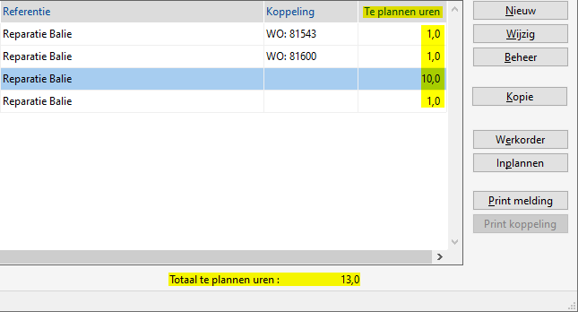
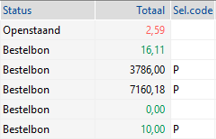

2020 Versie v2012 december 2.45
- Hoe, wat m.b.t. een actief / inactief relatie? nieuw
- Export productregistratie Stihl optie eindklantgegevens
- Selecteren programma's:
- Selecteren servicemeldingen extra kolom 'Uren' en Totaal

De arbeidscapaciteit kan hierdoor beter ingeschat en ingezet worden. - Selecteren bonnen
- Selecteren inkooporders
- Selecteren verkooporders
- Selecteren werkorders
- Selecteren servicemeldingen extra kolom 'Uren' en Totaal
- Opvragen verkooporders
- Overzicht machine website gegevens
- PP400 printer kop afstellen, label en lintplaatsen
{kind=link}
2020 Versie v2011 november 2.44
- Afschrijvingen machines
- Artikelen, online info leverancier Stierman De Leeuw
- Uitlezen barcode scanner aangepast
- Opvragen mutaties kostenplaats
- Hoe controleer ik op dubbele relaties? nieuw
- Hoe kan ik kosten achteraf op een machine boeken zonder werkorder?
- PP400 printer
- Export productregistratie Stihl nieuw
- Rentenota's
- Windows gebruikersaccount melding
- EDI leveranciers koppeling nieuw: AVA cooling en NRF
2020 Versie v2010 oktober 2.43
- Nieuwe offerte aanmaken PDF offerte
- Credit nota
- Powerall Schaduwkopie Kopie delen met helplijn
- Selecteren inkooporders controle op minimum orderbedrag

- Systeemeisen vernieuwd
{kind=link}
2020 Versie v2009 september 2.42
- Barcode scanningen
- Barcode scanner nieuw + QR-code scannen
- Controle BTW aansluiting
- Fedecom benchmark
- EDI leveranciers koppeling nieuw: Fabory, Nilfisk en Reesink
- Mijn Powerall / klantenportaal
- Kopie facturen
- Wat is een kostendrager?
- Powerall Connect Outlook Inboxbijgewerkt
- Werkorder tekening
2020 Versie v2008 augustus 2.42
- Advertentiekoppeling (machines)
- Hoe, wat kan ik met de artikelstatus?
- Hoe pas ik de achtergrond PDF's aan van de facturen etc.?
- Doorverwerken machine-transacties
- Opvragen machines tabblad Offertes
- Rapportage
- Wat doe ik als de financiële voorraad niet aansluit met de machines?
2020 Versie v2007 juli 2.41
- Doorverwerken interne werkorders
- E-inkoopfacturen (geavanceerd) eigen Inbox
- Hoe kan ik een opslag toepassen bij bepaalde artikelen, bij de kassa?
- Hoe werkt een vooruit- of aanbetaling bij een verkoop- of werkorder?
- Machine marge regeling
2020 Versie v2006 juni 2.40
- Onderhoudsschema's machines artikelen toevoegen per beurt
- Zoek artikelen
2020 Versie v2005 mei 2.39
- Kopiëren uit catalogus of online informatie
- Koppeling werk-/verkooporder met inkooporder
- Zoeken leveringen
2020 Versie v2004 april 2.39
- EDI / Digitale inkooporder aanmaken + Digitale order Technische Unie
- Van welke leveranciers is een EDI koppeling beschikbaar?
- Invoeren kassabonnen pin-code en retour scan
- Machine VA-Keur
- Multimagazijn overboeken
- Overzicht orders (te picken) 2.0 nieuw
- Berekenen verhuurtarieven
2020 Versie v2003 maart 2.38
-
Opmerking: Er kan een eigen lay-out voor de betaallijst of incassolijst gebruikt worden.
• Betere integratie met de Technische Unie, digitale inkooporder kunnen met één druk op de knop besteld worden. - Hoe geef ik een vast IP-adres aan de PowerPrint?
- Hoe werk ik de lopende orders bij, (m.b.t. NAW-gegevens)?
- Werkorder planbord + FAQ bijgewerkt.
- Welke opties zijn er bij servicemeldingen / werkorders en Werkbon App? vernieuwd
2020 Versie v2002 februari 2.37
- E-inkoopfacturen (geavanceerd) uitbreiding autorisatie / log
- Werkorder planbord + FAQ
- Hoe, wat kan ik ... m.b.t. dashboard / selecteren programma's? sortering op kolommen
- Wat doe ik bij de e-mail melding 'Powerall CRM <versie> for IOS is now available to test'?
- Werk controleren en aftekenen (Werkbon App)
2020 Versie v2001 januari 2.36
- CBS aangifte toegevoegd Intrastat en CBS handleiding 2020
- Onderhoud reiszones nieuw in menu
- Opvragen machines
- Opvragen relaties
- Vaste activa (module)
- Powerall Werkbon App